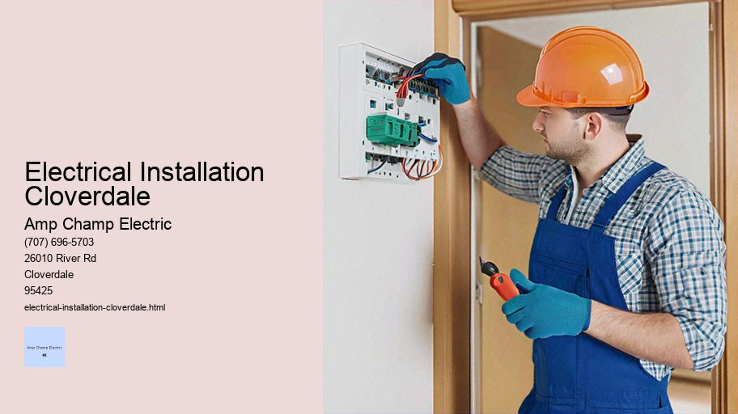

News
Electrical Installation Healdsburg
Electrical Installation Healdsburg
Electrical Installation Santa Rosa
Electrical Installation Cloverdale
Electrical Installation Geyserville
Electrical Installation Windsor
Maintenance and Repair Services Healdsburg
Maintenance and Repair Services Healdsburg
Maintenance and Repair Services Santa Rosa
Maintenance and Repair Services Cloverdale
Maintenance and Repair Services Geyserville
Maintenance and Repair Services Windsor
Electrical Safety Inspections Healdsburg
Electrical Safety Inspections Healdsburg
Electrical Safety Inspections Santa Rosa
Electrical Safety Inspections Cloverdale
Electrical Safety Inspections Geyserville
Electrical Safety Inspections Windsor
Energy Efficiency Upgrades Healdsburg
Energy Efficiency Upgrades Healdsburg
Energy Efficiency Upgrades Santa Rosa
Energy Efficiency Upgrades Cloverdale
Energy Efficiency Upgrades Geyserville
Energy Efficiency Upgrades Windsor
Specialty Electrical Services Healdsburg
Specialty Electrical Services Healdsburg
Specialty Electrical Services Santa Rosa
Specialty Electrical Services Cloverdale
Specialty Electrical Services Geyserville
Specialty Electrical Services Windsor
About Us
Contact Us

Electrical Installation Cloverdale
Electrical Apprenticeship Programs
Electrical Installation: The Lifeline of Modern Civilization
In the tapestry of modern civilization, electrical installations are akin to the intricate threads that create a vivid picture of progress and comfort. Without them, our homes would be devoid of light after sunset, our hospitals couldn't save lives as effectively, and industries would grind to a halt. This essay delves into the importance of electrical installations, their components, and the standards that govern them.
At its core, an electrical installation encompasses all fixed electrical equipment provided for an end-user's use. It begins at the point where electricity is delivered to a property—be it residential, commercial or industrial—and includes everything from wiring and sockets to major appliances and complex machinery.
The journey of creating a safe and efficient electrical installation starts with meticulous design. Engineers consider various factors such as load requirements, potential growth in demand, energy efficiency norms, safety regulations, and environmental impacts. Thereafter comes the actual process of installation which involves running cables through walls, ceilings or underground conduits; installing switches, outlets and fixtures; setting up distribution boards; and connecting heavy machinery if required.
Safety is paramount when dealing with electricity—a force invisible yet potent enough to cause severe injury or death if mishandled. Hence adherence to national codes like the National Electrical Code (NEC) in the United States or the Wiring Regulations (BS 7671) in the United Kingdom is not just necessary but legally mandated. These codes ensure that every aspect of an installation minimizes risks associated with electric shock or fire.
Furthermore, technological advancements have transformed electrical installations from mere conduits of power to sophisticated systems integrated with automation and smart technology. Smart homes today can manage lighting based on natural daylight availability; heating systems operate only when needed; security systems interface seamlessly with mobile devices—all thanks to advanced electrical infrastructure working quietly behind plastered walls.
Maintenance plays a crucial role in ensuring longevity and reliability.
Wind Turbine Installation
Regular inspections identify potential hazards before they escalate into serious issues—loose connections may heat up over time leading to fires while outdated equipment could fail without warning causing outages or damaging other devices connected to it.
The environmental impact is another critical aspect considered during planning stages nowadays. Energy-efficient fixtures reduce electricity consumption while renewable energy sources like solar panels are becoming increasingly common features in new installations seeking sustainability alongside functionality.
For professionals within this field—electricians—they aren't merely workers who ply their trade but guardians who keep this invisible lifeline intact through skillful execution and vigilant maintenance practices. Their expertise ensures households awaken each day to coffee brewed by automated machines; students study under bright lights at night; hospitals operate life-saving equipment round-the-clock—all uninterrupted expressions of our dependency on well-crafted electrical installations.
In conclusion, whether we're charging smartphones or powering subway trains hurtling through underground tunnels—the silent hums of current flowing through wires tells a story of human ingenuity harnessed for progress. Electrical installations are indeed more than just cables hidden away from view—they're vital arteries pumping life into every facet of modern society making it brighter literally as well as metaphorically.
Electrical Installation Geyserville
Residential wiring and socket installation are essential components of modern living, ensuring that our homes are powered safely and efficiently. This intricate process is fundamental to providing the electrical infrastructure that supports a wide array of devices and appliances we depend upon every day. In this essay, we will explore the significance of residential wiring, delve into the intricacies of socket installation, and highlight best practices for ensuring both functionality and safety in our homes.
The heart of residential wiring lies in its ability to distribute electricity from the community power supply to individual households. This distribution must adhere to stringent regulations and standards designed to maintain safety and reliability. Residential wiring typically involves several types of wires including hot (live), neutral, and grounding wires which work together to create an electrical circuit within the home. The hot wire carries current from the power source to the outlet or fixture, while the neutral wire completes the circuit by returning current back to the service panel, and finally, the grounding wire provides a safe path for any fault currents.
When it comes to socket installation, precision is key. Sockets – also known as outlets – are points where electric appliances connect to the building's wiring system. They must be carefully installed at strategic locations around a house according to planned usage patterns for convenience as well as adherence to code requirements which dictate their height off floor level or distance from water sources like sinks or bathtubs due their susceptibility towards moisture.
Lighting Retrofitting
Before undertaking any socket installation project, one must understand local codes that govern such installations - these include guidelines on how many outlets per wall section or room based on square footage among others considerations related with load management so as not overload circuits which could lead potential hazards like fires.
Safety protocols during installation cannot be overstressed; turning off power at breaker before beginning work is critical along with using insulated tools wearing rubber-soled shoes reduce risk electrocution while handling live wires should they accidentally become energized during process.
Moreover, sockets come in different ratings suited various applications ranging household use heavy-duty industrial purposes each requiring specific types such duplex receptacles those designed weather-resistant outdoor environments GFCI (Ground Fault Circuit Interrupter) ones recommended bathrooms other areas prone wet conditions provide extra protection against shock hazards resulting from ground faults.
After installing new sockets necessary test them ensure proper operation voltage testers can help determine if indeed 'hot', indicating successful completion task hand additionally double-checking tightness connections visual inspection overall good craftsmanship go long way preventing future issues down line.
In conclusion residential wiring socket installations aren't merely mechanical tasks; they demand thorough understanding electrical principles strong attention detail safety-first mindset whether you're DIY enthusiast professional electrician importance planning executing these processes cannot underestimated given role they play keeping us connected empowered comfort own homes Without doubt it’s job worth doing right first time around peace mind lasts years come
electrical-installation-healdsburg.html
electrical-installation-santa-rosa.html
electrical-installation-cloverdale.html
electrical-installation-geyserville.html
electrical-installation-windsor.html
maintenance-and-repair-services-healdsburg.html
maintenance-and-repair-services-santa-rosa.html
maintenance-and-repair-services-cloverdale.html
maintenance-and-repair-services-geyserville.html
maintenance-and-repair-services-windsor.html
electrical-safety-inspections-healdsburg.html
electrical-safety-inspections-santa-rosa.html
electrical-safety-inspections-cloverdale.html
electrical-safety-inspections-geyserville.html
electrical-safety-inspections-windsor.html
energy-efficiency-upgrades-healdsburg.html
energy-efficiency-upgrades-santa-rosa.html
energy-efficiency-upgrades-cloverdale.html
energy-efficiency-upgrades-geyserville.html
energy-efficiency-upgrades-windsor.html
specialty-electrical-services-healdsburg.html
specialty-electrical-services-santa-rosa.html
specialty-electrical-services-cloverdale.html
specialty-electrical-services-geyserville.html
specialty-electrical-services-windsor.html
privacy-policy.html
sitemap.html
sitemap.xml
about-us.html
feed.xml
Commercial building electrical layout design
Commercial Building Electrical Layout Design: Concepts, Considerations, and Execution
The realm of commercial building electrical layout design is an intricate and multifaceted field that requires a harmonious blend of technical knowledge, foresight, and creativity. It involves the meticulous planning of electrical systems to ensure that they are safe, efficient, reliable, and adaptable to the evolving needs of commercial environments such as office buildings, retail spaces, hotels, and industrial facilities. This essay delves into the core concepts and considerations that guide the design process and examines how these plans come to life in real-world applications.
At its essence, commercial building electrical layout design is about creating an infrastructure that powers every aspect of modern commerce. From lighting to climate control; from security systems to data networks; every component depends on a well-conceived electrical plan.
**Fundamental Concepts**
The primary goal of any electrical layout design is safety. This priority governs all aspects of planning and installation. Following national codes such as the National Electrical Code (NEC) in the United States or similar standards elsewhere ensures designs meet minimum safety requirements for installation methods, materials used, and performance criteria.
Efficiency follows closely behind safety. An energy-efficient design not only reduces operating costs but also minimizes environmental impact—a consideration increasingly important in today’s eco-conscious market.
Reliability is paramount for commercial operations where downtime due to electrical failure can lead to significant financial losses. Therefore, designers must incorporate high-quality components and redundancy measures to maintain continuous operation.
Finally, flexibility facilitates future modifications with minimal disruption as businesses grow or change their use case scenarios over time without requiring extensive redesigns or retrofits.
**Design Considerations**
Several key considerations shape the foundation of effective commercial building electrical layout designs:
1. **Load Assessments**: Accurately estimating power demands is critical for creating a system capable of handling present needs while allowing for expansion. Load calculations take into account various factors like peak usage times and potential growth rates.
2. **System Configuration**: Deciding between single-phase or three-phase power systems will depend on the size of the building and types of devices utilized within it.
3. **Circuit Planning**: A well-thought-out circuit layout enhances efficiency by minimizing voltage drops across long distances while also reducing electromagnetic interference among different lines.
4. **Lighting Requirements**: Proper lighting is essential not just for functionality but also for aesthetics and productivity in workspaces—requiring careful selection of fixtures along with their placement patterns.
5. **Emergency Systems**: Backup generators, uninterruptible power supplies (UPS), emergency lighting circuits—these elements are designed to kick in during outages ensuring continuity and safety.
6. **Compliance with Regulations**: Adherence to local building codes & regulations cannot be overstated—it's vital not only from a legal standpoint but also as a quality assurance measure against faulty installations which could have dire consequences.
7. **Sustainability Initiatives**: Incorporating renewable energy sources (like solar panels), employing smart technologies (such as occupancy sensors), selecting products with lower environmental footprints—all reflect modern sustainable practices being integrated into contemporary designs.
8 .**Security Systems Integration**: With security being a major concern in public spaces nowadays – CCTV cameras , access control systems need dedicated circuits planned out early in designs stages .
9 .**Data & Communication Networks**: In our hyper-connected world , providing robust pathways for data transmission via Ethernet cabling , Wi-Fi routers etc., forms another layer complexity within comprehensive layouts .
10 .**Maintenance Accessibility**: Ensuring easy access panels , clearly labeled switchboards plus sufficient workspace around critical equipment aids maintenance efforts down line thus prolonging lifespan entire system .
**Execution Phase**
Once conceptualized , actual execution begins . Skilled electricians interpret drawings produced by designers turn them into physical entities . Every conduit laid cable run terminal connected brings blueprint closer reality until finally switches flicked lights come on signaling successful culmination project .
In closing , designing effective commercial building electric layouts necessitates profound understanding principles at play coupled diligent application those insights throughout process —from initial concept through final implementation . Whether architect journeyman working on cutting-edge skyscraper small-town contractor outfitting local shopfront alike aim remains same : deliver top-notch service excellence both form function ensuring occupants enjoy both comfort convenience powered by unseen yet ever-present electric grid beneath their feet .
Lighting fixture installation
Lighting Fixture Installation: An Illuminating Guide
The installation of lighting fixtures is an essential component in the design and functionality of any space. Whether it's for a cozy corner at home, the bustling floors of a commercial establishment, or the broad walkways of public areas, proper lighting ensures that we can see and experience our environment in its best light. This essay delves into the nuances of lighting fixture installation, highlighting its significance, various types and considerations one must keep in mind during the process.
Understanding Lighting Fixtures
Before embarking on an installation project, it's important to understand what lighting fixtures are. A lighting fixture is an electrical device that contains an electric lamp for illumination. Fixtures come in myriad forms including ceiling lights, wall sconces, table lamps, track lighting and more. Each serves a different purpose and creates distinct ambiances within a space.
Significance of Proper Lighting Installation
Proper installation is key to ensuring both aesthetic appeal and functional efficacy. Poorly installed lighting can lead to uneven light distribution, excessive glare or shadows which could affect visibility as well as the mood within a room. Moreover, improper installations may present safety hazards such as electrical fires or short circuits.
Types of Lighting Fixtures
There are several types of lighting fixtures designed for various applications:
1. Ambient Lighting - Provides overall illumination for a space.
2. Task Lighting - Offers bright focused light suitable for specific tasks like reading or cooking.
3. Accent Lighting - Used to highlight architectural features or artwork.
4. Decorative Lighting - Serves as ornamental pieces while providing light.
Each type requires careful consideration regarding placement and intensity to fulfill its role effectively.
Installation Considerations
When installing a new fixture there are several steps that should be meticulously followed:
1. Planning – Determine where the fixture will go based on function and design.
2. Electrical Safety – Ensure power sources are turned off before beginning work.
3. Mounting – Securely attach the fixture housing according to manufacturer instructions.
4. Wiring – Connect wires properly; live (hot), neutral, and ground need accurate connections.
5. Testing – Once installed switch on power briefly to test before finalizing placement.
Professional vs DIY Installation
While some may choose to install simple fixtures themselves following provided guidelines and taking necessary precautions; complex installations often require professional expertise due to intricate wiring systems or building codes compliance requirements.
LED Lighting Installation
For instance mounting heavy chandeliers involves reinforcing ceiling structures besides electrical work which might be beyond amateur skills set thus necessitating experienced hands who guarantee safe enduring installations with their technical know-how insurance coverage against potential mishaps during process.
Maintenance Tips Post-Installation
To ensure longevity performance maintaining these newly installed fixtures becomes crucial dusting regularly using appropriate cleaning agents bulbs replacement keeping eye out wear tear all contribute towards sustained optimal operation over time further reducing risks breakdowns saving costs long-term basis through prevention rather than cure approach maintenance regime post-installation period cannot overstated enough when comes safeguarding investment made into better brighter spaces around us via thoughtful addition well-installed light fittings.
Conclusion
In summary installing right kind light fitting isn't merely about throwing up bulb socket onto wall but rather entails strategic planning understanding specific needs given area coupled acute attention detail safety practices ongoing care considerations all amalgamate create harmonious blend between form function ultimately leading enhanced experiences every individual interacts lit environments daily basis whether knowingly unknowingly because end day good quality effective stands testament silent yet powerful influence plays our lives shaping way perceive interact world around us making journey through life just little bit brighter step time
Electrical panel and circuit breaker setup
Title: The Vital Role of Electrical Panels and Circuit Breaker Setups in Modern Living
Electrical Installation Cloverdale - Electrical Apprenticeship Programs
Wind Turbine Installation
Smart Home Automation
Lighting Retrofitting
LED Lighting Installation
Electrical Grounding
The heart of any home's electrical system is the electrical panel, often referred to as the breaker box. This critical component serves as a central hub for electricity distribution throughout the residence or building, ensuring that power is safely and efficiently routed to various circuits. Accompanying this central unit are circuit breakers—indispensable safety mechanisms designed to protect an electrical circuit from damage caused by excess current resulting from an overload or short circuit. Together, they form an electrical panel and circuit breaker setup, which plays a fundamental role in modern living by safeguarding our homes and facilitating the comfortable use of myriad electronic devices.
An electrical panel typically contains a main breaker that controls the power supply to all other branch circuits. It is essentially where the incoming electricity from your utility company is divided into subsidiary circuits while providing a means for each circuit to be shut off independently. Each branch circuit within the panel connects to one or more outlets in a specific area of your home through a dedicated circuit breaker. These breakers are tailored according to the anticipated electrical load—they vary in size usually ranging from 15 amps for standard lighting circuits up to 200 amps or more for an entire home or building.
Circuit breakers themselves are remarkable devices—a marvel of electromechanical engineering designed with precision for protection and convenience. They function automatically by interrupting current flow when they detect wiring problems that could potentially cause electric shocks or fires. If there is too much electric current flowing through the wires because of overloading (too many appliances running simultaneously) or due to a fault (like damaged wiring), the breaker trips, severing the connection and stopping the flow of electricity before any harm can occur.
This protective feature not only shields our homes but also conserves our appliances' lifespan by preventing potential damage due to erratic currents. When tripping occurs, it’s straightforward for homeowners to address; one must simply locate their electrical panel, identify which breaker has tripped—the lever usually flips into a neutral position—and reset it after resolving what caused it to trip initially.
Installation and maintenance of these systems require professional expertise, as working with electricity carries inherent risks. Electricians follow stringent codes and regulations during installation to ensure that everything operates within safe parameters without posing hazards such as electrocution or fire risk.
Modern civilization has grown increasingly reliant on stable and continuous access to electricity—our daily activities revolve around gadgets and appliances powered by this invisible force coursing through wires behind walls and ceilings—an unbroken stream orchestrated silently by our ever-vigilant sentinels: electrical panels and circuit breakers.
In conclusion, understanding how essential these systems are prompts appreciation for their presence quietly embedded in basements, garages, or utility closets. Without them functioning properly day-in-day-out, we would be at mercy not just of inconvenient power interruptions but serious risks too grave to ignore—making them unsung heroes anchoring our electrified existence with reliability and peace of mind.
Grounding systems and safety measures
Grounding Systems and Safety Measures: An Essential Guide for Electrical Safety
The concept of grounding is pivotal in the world of electricity. Grounding systems are designed to protect both people and electrical devices from unexpected surges that can cause harm or even catastrophic events. In essence, a grounding system provides a safe path for electricity to follow, should any irregularity occur within an electrical circuit.
Grounding, also known as earthing, involves connecting the electrical system of a building or structure directly to the earth. This connection is typically made using conductive materials like copper or aluminum that are buried in the ground or attached to a grounding rod. The primary purpose of this system is to reduce the risk of electric shock, prevent damage to electrical equipment, and minimize the likelihood of an electrical fire.
Electricity always seeks the path of least resistance back to its source. In normal operation, this path is through the circuit’s wiring; however, if there is a fault – such as a wire breaking loose or insulation failing – electricity may find an alternative route. If a person becomes part of this unintended pathway, they could be subjected to electric shock—a dangerous and potentially fatal occurrence. A properly installed grounding system gives electricity an easier path back into the ground without traveling through unintended routes that might include humans or sensitive equipment.
Safety measures related to grounding involve several key components:
Smart Home Automation
1. **Grounding Electrode System**: This consists of electrodes placed in contact with the earth (ground) which can safely disperse unwanted currents into it.
2. **Bonding**: Bonding ensures continuity and creates an electrically conductive pathway between different metallic parts that might otherwise be isolated from each other. This prevents potential differences between these parts which could lead to hazardous voltages.
3. **Ground Fault Circuit Interrupters (GFCIs)**: These devices quickly cut off power when they detect current flowing along an unintended path—such as through water or a human being—thus reducing risk of electrocution.
4. **Surge Protectors**: These devices help prevent voltage spikes from damaging connected equipment by diverting excess voltage directly into the ground.
5. **Regular Maintenance and Inspection**: Ensuring that all components remain in good working order over time is critical for maintaining safety standards.
In addition to these technical aspects, education plays a vital role in safety surrounding grounding systems. Workers who deal with electrical installations must be thoroughly trained in understanding how these systems work and how their actions may affect overall safety protocols including proper installation techniques and what precautions must be taken when repairing grounded systems.
Building codes often mandate certain requirements for grounding systems due to their crucial role in preventing injury and property damage. Compliance with these standards helps ensure that both residential homes and commercial buildings maintain high levels of safety against electrical hazards.
Despite best practices though, accidents do happen; therefore having robust emergency response plans alongside regular training drills will bolster preparedness against potential incidents involving electricity malfunctions.
Ultimately, while invisible to most daily activities within our homes and workplaces, grounding systems form part of our first line defense against unseen dangers presented by electric currents running silently behind walls and beneath floors. Their silent vigilance combined with proactive safety measures create environments where we can use technology confidently knowing that risks have been mitigated through thoughtful engineering practices dedicated towards protection from one nature's most powerful forces - electricity.
About
Cloverdale
may refer to:
About Cloverdale
Check our other pages :
Energy Efficiency Upgrades Healdsburg
Electrical Installation Geyserville
Maintenance and Repair Services Healdsburg
Specialty Electrical Services Geyserville
Specialty Electrical Services Healdsburg
Frequently Asked Questions
What types of electrical installation services are available in Cloverdale?
In Cloverdale, you can find a range of electrical installation services including residential wiring, commercial building electrical systems, lighting installations, panel upgrades, smart home automation systems, and installation of appliances and fixtures.
How do I choose a reliable electrician for my electrical installation needs in Cloverdale?
To choose a reliable electrician in Cloverdale, look for licensed and insured professionals with good reviews or recommendations. Verify their credentials, ask about their experience with your specific type of project, and request quotes from multiple electricians to compare.
What should I expect in terms of costs for electrical installation services in Cloverdale?
Costs for electrical installations vary depending on the complexity and scope of the project. Expect to be quoted based on materials needed and labor hours. Its best to get detailed estimates from several electricians to understand the expected costs for your specific job.
Are there any local codes or regulations in Cloverdale that affect electrical installations?
Yes, Cloverdale will have specific building codes and regulations that govern electrical work to ensure safety and compliance. A qualified local electrician will be familiar with these requirements and make sure that all installations meet the current standards set by local authorities.
Electrical Installation Cloverdale